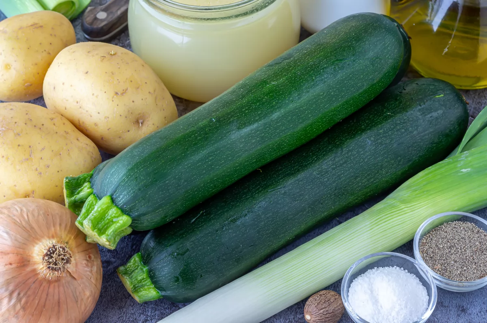
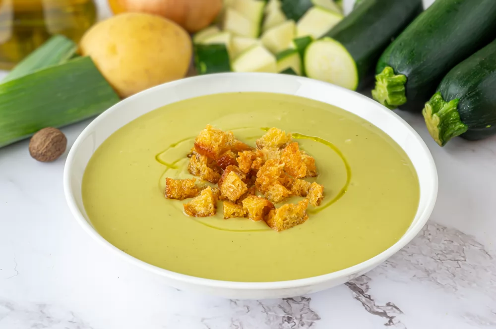

Ingredientes
-
1 kg de calabacines
-
1 cebolla
-
1 puerro
-
400 g de patatas
-
4 cucharadas de aceite
-
400 ml de caldo de pollo, de verduras o agua
-
Nuez moscada molida (opcional)
-
pimienta negra molida
-
sal

Paso a Paso
-
Empezamos con la preparación de nuestros ingredientes. Lavamos bien 1 kg de calabacines. Podemos dejarlos con piel o pelarlos, esto es opcional. Una vez limpios, les retiramos los extremos y los troceamos en cubos medianos.
-
Con los calabacines ya listos, pelamos y cortamos en trozos 1 cebolla. Retiramos las hojas exteriores del puerro, lo limpiamos y lo cortamos en rodajas gruesas. Por último, cogemos 400 g de patatas, las pelamos, las enjuagamos y, también, las cortamos en trozos no demasiado grandes para que se hagan rápido.
-
Ahora, nos ponemos manos a la obra con la cocción. En una olla, calentamos 4 cucharadas de aceite de oliva a fuego medio. Una vez caliente, añadimos el calabacín, la cebolla, el puerro y las patatas. Rehogamos todo durante unos 15 minutos, removiendo de con frecuencia para que no se quemen las verduras.
-
Comprobamos si las patatas están cocidas y acto seguido, con ayuda de una batidora, trituramos todo en la misma olla hasta obtener una textura suave y sin grumos. Si consideras que el puré está demasiado espeso, puedes añadir un poco más de caldo o agua hasta lograr la consistencia deseada.
-
Por último, es el momento de darle el toque final a nuestro puré y ya lo tenemos listo. Condimentamos al gusto con nuez moscada molida, pimienta negra molida y sal. Es importante hacerlo poco a poco y probando hasta que esté a nuestro gusto.
Resultado final
El final, o una imagen como quedaria este plato sería tal que así:
